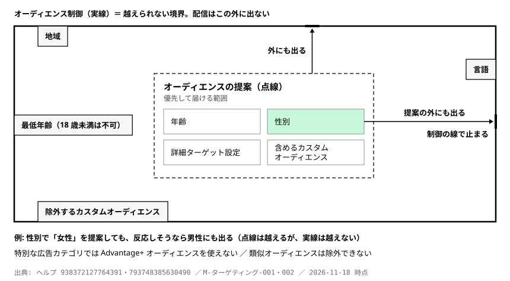
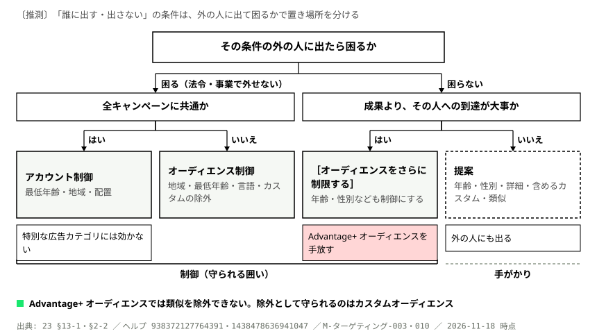

[ Meta / 23 ]
23ターゲティングとオーディエンス
位置づけ: 「誰に出すか」を決めるときに引くメモ。Google の ../Google広告の基礎/23_オーディエンスとターゲティング.md（以下 G23）に当たる。考え方の地図は 00_全体像.md §7、配置の扱いは 01_オークションと配信の仕組み.md §9 にある
このメモについて
- 確認日: 2026-11-18（Meta ビジネスヘルプセンターの日本語ページを Claude のアプリ内のブラウザで本文まで読んだ。Advantage+ オーディエンス 3 ページ、Advantage+ 詳細ターゲット・カスタムオーディエンス・類似オーディエンス、詳細ターゲット設定、カスタムオーディエンス 4 ページ、類似オーディエンス 2 ページ、特別な広告カテゴリ、ティーン向け広告、アカウ…
- 位置づけ: 「誰に出すか」を決めるときに引くメモ。Google の
../Google広告の基礎/23_オーディエンスとターゲティング.md（以下 G23）に当たる。考え方の地図は00_全体像.md§7、配置の扱いは01_オークションと配信の仕組み.md§9 にある - 使い方: 確認日から 30 日を過ぎていたら、末尾の出典を取り直してから使う。Meta はターゲティングの選択肢を 2022 年から縮め続けている（00§7-3）。「段階的に導入」と書かれた機能が多い
- 凡例: ✓ 公式で確認 ／ △ 資料によって食い違う ／ ? 確認できず
- 主張の出どころの印: 公式〔報道〕〔第三者〕〔推測〕
地図
本文
0.先に結論
- 01
Meta のターゲティングは「制御」と「提案」の 2 層。 制御（地域・最低年齢・除外するカスタムオーディエンス・言語）は破られない。提案（年齢・性別・詳細ターゲット・含めるカスタムオーディエンス）は手がかりで、成果が上がりそうなら外の人にも出る ✓（938372127764391）
- 02
提案を制御に変える道はある。 [オーディエンスをさらに制限する]／[広告のリーチをさらに限定]で年齢・性別・詳細ターゲット・カスタムオーディエンスを制御として置ける。ただしそうすると Advantage+ オーディエンスは外れる ✓（793748385630490、938372127764391）
- 03
地域も「広げる」スイッチがある。 [広告に反応する可能性が高い人へのリーチを増やす]を選ばない限り、地域の外には出ない ✓（938372127764391、793748385630490）
- 04
Advantage+ オーディエンスでは類似オーディエンスを除外できない。 除外できるのはカスタムオーディエンス（顧客リスト・ウェブサイトなど）。詳細ターゲットの除外は 2025 年に廃止済み（00§7-3）✓
- 05
リターゲティングには Advantage+ オーディエンスを勧めないと Meta 自身が書く ✓（273363992030035）
- 06
特別な広告カテゴリ（住宅・雇用・金融・社会問題）では Advantage+ オーディエンスを使えないとヘルプは書く。開発者文書は使えると読める表を載せる △
- 07
日本の事業者が日本向けに出す住宅・雇用・金融の広告は、オーディエンスの制限の対象外（米国・カナダ・欧州が対象）。ただし特別な広告カテゴリの欄は必ず埋める（
NONEか該当カテゴリ）✓（開発者文書 Special Ad Categories） - 08
18 歳未満を含むオーディエンスでは、地域・年齢・性別以外のほぼすべての手段が使えない（詳細ターゲット・カスタムオーディエンス・類似・言語、さらに性別も一部のページは不可と書く △）✓（229435355723442、414975413946182）
- 09
類似オーディエンスは国を選ばなくなった。 作成時の地域の指定は無くなり、広告セットの地域で探す。新しい類似はオーディエンスマネージャにサイズが出ない ✓（465262276878947、開発者文書 v27.0）
1.Google との対比（G23 と）
- 既定が AI 任せ
- 詳細ターゲットの除外は廃止
- 30 日更新しないと「期限切れ」
| 観点 | Google 広告（G23） | Meta 広告 | 運用の判断への効き方 |
|---|---|---|---|
| 誰に出すかの系統 | 自社データ／Google のセグメント／自分で作るもの（カスタム セグメント・組み合わせ） | カスタムオーディエンス（自社データ・Meta 上の反応）／詳細ターゲット（興味・関心、行動、利用者層）／類似オーディエンス／Advantage+ オーディエンス（AI に任せる）✓ | 系統はよく似る。違いは Meta では既定が AI 任せで、自分の指定は「提案」になること |
| 指定の効き方 | 検索・ショッピング＝モニタリング、P-MAX＝シグナル、DG・動画・ディスプレイ＝ターゲティング（最適化されたターゲティングで外へ） | Advantage+ オーディエンスのとき: 制御（地域・最低年齢・除外・言語）は守る、提案（年齢・性別・詳細・含めるカスタム）は外へ広がる ✓ | Meta の提案は Google の P-MAX のシグナルに近い。DG の「最適化されたターゲティング」とも似る |
| 広げる仕組みを止める | 最適化されたターゲティングは広告グループでオフ。P-MAX は絞る手段なし（除外だけ） | [オーディエンスをさらに制限する]で制御に変える（Advantage+ オーディエンスがオフになる）✓ | Meta は「絞る」道が残っている。ただし絞ると Advantage+ の状態ではなくなる（01 §9、00§4-2） |
| 既存顧客を外す | 自社データの除外。P-MAX は「データの除外」か新規顧客の獲得 | カスタムオーディエンスの除外（制御として守られる）✓。類似は除外できない（Advantage+ オーディエンス）✓ | Meta は既存顧客の除外を「制御」に置けば確実に守られる |
| 除外できるもの | 自社データとカスタム セグメントだけ（オーディエンス）、地域は所在地基準のみ | カスタムオーディエンス、地域（ただし「最近いた人」の基準では除外不可）、アカウント単位の勤務先。詳細ターゲットの除外は廃止（2025-01）✓ | 「興味・関心で外す」は Meta ではもうできない |
| 顧客リスト | カスタマー マッチ: 絞り込みは利用 90 日以上・累計 5 万ドル超、最小 100 人、最大 540 日 | 顧客リストのカスタムオーディエンス: 利用条件の金額は書かれていない、件数無制限（1 回 1 万件）、反映に通常 24 時間、30 日更新しないと「期限切れ」表示、2 年使わないと削除へ ✓ | Meta は小さな広告主でも顧客リストで絞れる。代わりに更新の手間がかかる |
| サイト訪問者 | Google タグのリスト: 既定 30 日、最大 540 日 | ウェブサイトのカスタムオーディエンス: 保持の日数を選ぶ。上限は △（開発者文書の項目は 1〜180 日、同じページの FAQ は「最長 365 日」） | Google より短い。長い除外リストを作れない〔推測〕 |
| 類似 | 旧「類似セグメント」は 2023 年に終了、DG 専用の類似だけ。DG では 2026-03 から「提案」モードが既定（段階的） | 類似オーディエンス: シード 100 人以上（1,000〜5,000 推奨）、上位 1〜20%、1 シードから最大 500 本、地域は広告セットに従う。Advantage+ 類似は既定で外へ広がる ✓ | Meta の類似は今も主力の道具。ただし「絞り」ではなく「手がかり」 |
| 地域の判定 | 所在地やインタレスト（既定）／所在地。除外は所在地だけ | 「居住地」と「最近いた場所」の両方（home・recent、これしか選べない）。最近いた場所は除外に使えない ✓ 開発者文書 | Google の「関心のある人」に当たる地域の考え方は Meta に無い。地域の外に出るのは[リーチを増やす]を選んだときだけ |
| 年齢 | 18-24〜65+ と「不明」。13 歳未満・18 歳未満だけの指定は不可 | 13〜65 歳（既定 18）。Advantage+ オーディエンスでは最低年齢 18〜25、最高 65 固定 ✓ | Meta は 13〜17 歳に出せるが、使える手段が大きく減る（§9） |
| 特別な扱い | 制限付きの業種、個人情報に配慮した広告のポリシー | 特別な広告カテゴリ。米国・カナダ・欧州向けで年齢・性別・地域半径・詳細・類似を制限 ✓ | 日本向けの住宅・雇用・金融は制限の対象外（指定は必要） |
2.Advantage+ オーディエンス ✓公式本文（273363992030035、938372127764391、793748385630490、開発者文書 Advantage+ audience）
- 広げない
- 外の人にも出す
- 提案は制御の外には出ない
- 自動で適用
- これらのカスタムオーディエンスを除外する
- Advantage+ オーディエンスでは類似オーディエンスを除外できない
2-1.何か
- Meta の AI でオーディエンスを見つける機能。自分でオーディエンスを定義しなくてよい。オンにすると、手動ではターゲットにしなかった人にも届くので、結果の単価が下がる可能性がある ✓
- AI が使う情報の例: 過去のコンバージョン、Meta ピクセルのデータ、以前の広告へのアクション。「何百万ものシグナル」を分析する ✓
- Meta の主張（条件は書かれていない）: 結果の単価が、認知度の目的で 14.8%、トラフィック・エンゲージメント・リードで 9.7%、売上・アプリの宣伝で 7.2% 下がった ✓（Meta の自己申告）
2-2.制御と提案 ✓（938372127764391、793748385630490）

Advantage+ オーディエンスで守られるのは地域・最低年齢・除外するカスタムオーディエンス・言語だけで、年齢・性別・詳細ターゲット・含めるカスタムオーディエンスは「提案」として外にも広がる。絞りが必須の商材は制御に置けるもので守るか［オーディエンスをさらに制限する］を使う（特別な広告カテゴリでは使えず、類似は除外できない）。
出典: M-ターゲティング-001・M-ターゲティング-002・M-ターゲティング-003 ほか 7 件 · 2026-11-18 時点
| 区分 | 入るもの | どう扱われるか |
|---|---|---|
| オーディエンス制御（コントロール） | 地域、最低年齢、除外するカスタムオーディエンス、言語 | 広げない。例えば地域は、[広告に反応する可能性が高い人へのリーチを増やす]を選ばない限り、指定した地域の外に出ない |
| オーディエンスの提案 | 年齢、性別、詳細ターゲット設定、含めるカスタムオーディエンス（類似を含む） | 提案に合う人を優先しつつ、成果が上がりそうなら外の人にも出す。例: 性別で「女性」を提案しても、反応しそうと AI が判断すれば男性にも出る。提案は制御の外には出ない |
| 広告アカウント設定（アカウント制御） | 最低年齢、除外する地域、配置の除外など | アカウント内のすべてのキャンペーンに効く（§3） |
Meta の使い分けの表（要約）:
| 目的 | 勧める道具 |
|---|---|
| キャンペーンで、広告を見られる人を制限する | オーディエンス制御 |
| 優先したい人に届くよう促しつつ、成果を最大にする | オーディエンスの提案 |
| 一部の人にアカウントの広告を一切出さない | 広告アカウント設定 |
2-3.設定の流れの要点 ✓（793748385630490）
- 広告セットで Advantage+ オーディエンスが使えるなら自動で適用される
- 制御の[他のコントロールを表示する]で使えるもの:
- これらのカスタムオーディエンスを除外する: 今の顧客などを外す。除外したカスタムオーディエンスでも、新規顧客の獲得キャンペーンなどで提案として足せる。Advantage+ オーディエンスでは類似オーディエンスを除外できない（除外するとオーディエンスが制限されて配信の機会が減るため）
- 最低年齢: 例えば 21 歳未満の購入が違法な商品。Advantage+ オーディエンスでは 18 歳（一部の国はそれ以上）未満を選べない
- 言語
- [オーディエンスをさらに制限する]／[広告のリーチをさらに限定]を選ぶと、年齢・性別・カスタムオーディエンス（類似を含む）・詳細ターゲットを制御として置ける。場合により[提案として使用する]のチェックを外す。これが Advantage+ オーディエンスをオフにする操作
- 提案の欄: 含めるカスタムオーディエンス（類似を含む）、年齢（制御で最低年齢を置いたら上書きできない）、性別、詳細ターゲット
- Advantage+ オーディエンスを使っていないキャンペーンを複製し、[おすすめの設定]を選ぶと Advantage+ オーディエンスが自動で適用される。[オリジナルの設定]なら[Advantage+ オーディエンスを利用]の選択肢が出る
2-4.API の決まり ✓（開発者文書 Advantage+ audience、S-23）
targeting_automation.advantage_audienceを 1（オン）か 0（オフ）。v23.0 以降、新しい広告セットでは既定が 1 か、明示が必須。既存の広告セットの更新には適用されない- オンのとき:
age_minは 18〜25 だけ、age_maxは 65 固定、age_rangeで提案の年齢幅を渡せる - 既定の値（年齢・性別・含めるカスタム・含める詳細を既定か省略）や、個別の「緩和」設定を使う形なら、明示しなくてもオンになる。年齢 30〜50 のような既定でない設定を緩和なしで置くと、明示を求めるエラーになる
- 制約（広げないもの）として開発者文書が挙げるのは「地域、最低年齢、言語、カスタムオーディエンスの除外」。ヘルプと一致 ✓
2-5.いつ勧めるか・勧めないか ✓（273363992030035）
- Meta はほぼすべての種類のキャンペーンで、Advantage+ オーディエンスの A/B テストを勧める
- リターゲティングのキャンペーンでは勧めない
- 売上・リード・アプリの宣伝では、より包括的な Advantage+ キャンペーン（00§4-2）を勧める。「顧客の知識を共有しつつ AI にオーディエンスを探させたいが、キャンペーンのすべてを自動にはしたくない」ときに Advantage+ オーディエンスが合う
- 社会問題・選挙・政治、医薬品のキャンペーンでは、Advantage+ の機能の一部が使えない場合がある ✓（793748385630490）
- 特別な広告カテゴリ（金融商品・サービス、雇用、住宅、社会問題・選挙・政治）のキャンペーンでは Advantage+ オーディエンスを使えない ✓（938372127764391）。△ 開発者文書 Special Ad Categories の
tune_for_categoryの表は「サポートする機能」に Advantage+ Audience を挙げる
2-6.Google との違い
- G23 の「P-MAX のシグナル」は「成果が見込めれば外へ、絞る手段は無く除外で削るだけ」。Meta の提案もほぼ同じだが、Meta は制御に変えて絞る道が残る
- G23 の DG・ディスプレイの「最適化されたターゲティング」は広告グループでオフにできる。Meta の Advantage+ オーディエンスも広告セットでオフにできるが、売上・リード・アプリでは「Advantage+ の状態」（00§4-2）を手放すことになる
- Google の地域は「所在地やインタレスト」が既定で、関心のある人にも出る。Meta の地域は既定で外に出ない。外に出すスイッチ（[リーチを増やす]）を選んだときだけ
2-7.運用の判断への効き方
未成年に出せない → 最低年齢（またはアカウント制御）、商圏の外に出せない → 地域、既存客に出したくない → カスタムオーディエンスの除外、言語が合わない人に出したくない → 言語
本当に守る必要があるなら[オーディエンスをさらに制限する]で制御にする。その代わり Advantage+ オーディエンスは外れる。事業上の必要（法令・商品の性質）が無ければ提案のままにする〔推測〕
Meta 自身が勧めない ✓。カスタムオーディエンスを制御として置く
Meta の推奨どおり、旧来のオーディエンスと Advantage+ オーディエンスを比べる（テストの作り方は 26 の担当 B の章）
3.広告アカウントのアカウント制御 ✓公式本文（1438478636941047、906206294602874）
- 広告アカウント内のすべてのキャンペーン
- 最大 48 時間
- 社会問題・選挙・政治の広告と、金融商品・サービス、雇用、住宅の広告には適用されない
- Google との違い
- オーディエンス（年齢・地域）もアカウント単位で縛れる
- 運用の判断への効き方
- ビジネスの制約（特定の年齢未満に出せない、一部の国に発送できない、特定の配置を使いたくない など）を、広告アカウント内のすべてのキャンペーンに適用する設定 ✓
- Advantage+ オーディエンスや Advantage+ 配置など AI を使う設定を選んでも、ビジネスにふさわしくない形で配信されるのを防ぐためのもの。新しいキャンペーンには作成者を問わず自動で適用される ✓
- [広告設定]へのアクセス許可が要る。既存のキャンペーンへの反映に最大 48 時間。作成時には変えられず、[オーディエンス]に[広告設定が適用されています]と出る ✓
- 社会問題・選挙・政治の広告と、金融商品・サービス、雇用、住宅の広告には適用されない ✓
- 一部のアプリ広告の設定ツールはアカウント制御への統合を進めている、と書く ✓
- アカウント制御を使っても、キャンペーンの Advantage+ の状態には影響しない ✓（906206294602874）
- 置けるもの: 最低年齢、除外する地域（00§7-1、S-54 の抜粋）、配置の除外（
01§9-2）。この画面の全項目は折りたたまれていて読んでいない ?
Google との違い: Google の P-MAX のプレースメント除外・IP 除外が「アカウント単位だけ」なのと構図が似る（G23 §0）。Meta はオーディエンス（年齢・地域）もアカウント単位で縛れるのが違い。
運用の判断への効き方: 酒類（20 歳未満に出せない）、配送できない地域がある EC、法令で年齢の決まりがある商材は、キャンペーンごとに設定するよりアカウント制御に置く。担当者が替わっても漏れない〔推測〕。ただし特別な広告カテゴリのキャンペーンには効かないので、そちらは個別に設定する。
4.詳細ターゲット設定 ✓公式本文（182371508761821、128066880933676、開発者文書 Advantage Targeting・Advantage detailed targeting）
- 詳細ターゲットだけの機能
- 社会問題・選挙・政治のキャンペーンでは使えない
- 既定でオフ
- 強制でオン
- 多くの最適化目標で強制的に外へ広がる
- 除外が廃止
4-1.何か
- 興味・関心、行動、利用者層データで人に届ける設定。例: 興味・関心「ブルース音楽」、行動「よく旅行する」、利用者層データ「大学生」✓
- 使う要素: クリックした広告、アクションしたページや投稿、参加しているグループ・出欠を返したイベント、モバイル端末と回線の速さ、インストールしたアプリやゲーム ✓
- 上位の興味・関心は複数の言語に翻訳されている。ある言語で無い興味は翻訳対象外の可能性 ✓
- 開発者文書の上限: 興味・関心は無制限（100 推奨）、学校・勤務先・専攻は 200（100 推奨）✓（Targeting restrictions）
4-2.Advantage+ 詳細ターゲット設定（提案としての詳細ターゲット設定）
- 詳細ターゲットの条件に当てはまらない人にも届けて成績を上げる。成果の向上やコストの節約が見込めると Meta が判断した人に出す。さらに拡大することもある ✓（128066880933676）
- 詳細ターゲットだけの機能で、地域・年齢・性別には使えない。除外や、詳細ターゲット以外の設定（年齢・性別・地域・言語）は引き続き適用される ✓
- 拡大されると、推定オーディエンスサイズは「条件を満たすアカウントの合計数」ではなくなる ✓
- 社会問題・選挙・政治のキャンペーンでは使えない ✓
- 開発者文書: 対応する目的では既定でオフ、
targeting_optimization=expansion_allでオプトイン ✓。ただし最適化目標が価値・アプリのインストール・アプリイベント・会話・オフサイトのクリック・LP ビュー・返信・メッセージでの購入・リサーチアンケート・アプリ内の価値・購読・クリック・リマインダー・ソーシャルインプレッション・オファーの利用・オフサイトのコンバージョン・ROAS・オンサイトのコンバージョン・アプリのインストールとオフサイトのコンバージョン・増分のオフサイトのコンバージョン・来店の 21 種のときは、詳細ターゲットと類似の拡張が強制でオン（targeting_optimization_types、読み取り専用）✓（開発者文書 Advantage Targeting） - △ 読み方: 「既定オフ（オプトイン）」と「強制オン」の両方が開発者文書にある。上の 21 種の目標では強制、それ以外の対応目的では任意、と読むのが両立する読み方〔推測〕（00§7-2 と同じ結論）
- 拡張オンのとき、API のリーチの見積もりは管理画面と違いうる（API は拡張後の全体を見積もる）✓
4-3.除外
- 詳細ターゲットの除外は 2025-01（v22.0）で廃止、アカウント単位の勤務先の除外は残る（00§7-3、S-55 の抜粋）
- 特別な広告カテゴリ（米国・カナダ・欧州向け）では興味の除外・詳細ターゲットの除外は不可（§10）✓
4-4.Google との違い
- Google の「アフィニティ・購買意向・ライフイベント・詳しいユーザー属性」に当たる。違いは、Meta の詳細ターゲットは多くの最適化目標で強制的に外へ広がること（✓）と、除外が廃止されたこと
- Google のカスタム セグメント（語句や URL で自作）に当たるものは Meta の詳細ターゲットには無い ?（このメモの範囲では見つけていない）
4-5.運用の判断への効き方
- 詳細ターゲットは「絞り」ではなく「最初の手がかり」: 成果目的（コンバージョン・価値など）の広告セットでは強制的に広がる。詳細ターゲットを細かく作り込む手間を、素材づくりに回す〔推測〕
- 興味で「外す」発想を捨てる: 外したい人はカスタムオーディエンス（顧客リスト・サイト訪問者）にして除外に置く
5.カスタムオーディエンス ✓公式本文（744354708981227、572787736078838、610516375684216、1474662202748341、414975413946182、開発者文書 Audiences Overview・Customer File／Website／Engagement Custom Audiences）

カスタムオーディエンスは自社のソース（ウェブサイト・顧客リストなど）と Meta のソース（動画・リード獲得フォームなど）に分かれ、100 人以上いれば類似オーディエンスの元にできる。保持の上限はソースで 90〜730 日と違い（ウェブサイトは 180 日と 365 日で △）、リード広告の反応者は 90 日で消えるので、長く追うなら顧客リストに移す。
出典: M-ターゲティング-014・M-ターゲティング-030・M-ターゲティング-031 ほか 10 件 · 2026-11-18 時点
- 除外のみのカスタムオーディエンス
- 除外の目的だけ
- 最大 500 種類
- 最大 24 時間
- 顧客リストが 30 日を超えて更新されていない
- 90 日で削除
5-1.種類
| 系統 | 種類 | 中身 |
|---|---|---|
| 自社のソース | ウェブサイト | Meta ピクセルで記録したサイト訪問者。Meta のプラットフォームでのイベントで追加されることもある |
| 同上 | アプリアクティビティ | アプリで特定のアクションをした人 |
| 同上 | カタログ | 商品カタログのアイテムにアクションした人 |
| 同上 | 顧客リスト | メールアドレス・電話番号などのリストを Meta の利用者と照合 |
| 同上 | オフラインアクティビティ | 店舗での購入などオフラインの行動 |
| 同上 | 除外のみのカスタムオーディエンス | 顧客リストの一種で、除外の目的だけに使える |
| Meta のソース（Facebook・Instagram・WhatsApp・Threads） | 動画 | 動画を視聴した人 |
| 同上 | リード獲得フォーム | フォームを開いた・送信した人 |
| 同上 | インスタントエクスペリエンス | 全画面の広告にアクションした人 |
| 同上 | ショッピング | Facebook ショップ・Instagram ショップで商品を見た・買った人 |
| 同上 | Instagram アカウント | Instagram のビジネスアカウントにアクションした人 |
| 同上 | イベント | Facebook イベントに返信した人 |
| 同上 | Facebook ページ | ページにアクションした人 |
| 同上 | Facebook 上の出品 | Marketplace の出品投稿にアクションした人 |
- 1 つの広告アカウントで最大 500 種類のカスタムオーディエンスを作れる ✓（744354708981227）
- カスタムオーディエンスは類似オーディエンスの元にできる ✓
5-2.顧客リスト ✓（開発者文書 Customer File、572787736078838）
| 項目 | 内容 |
|---|---|
| 件数 | 無制限。1 回の送信は 1 万件まで |
| 反映 | すぐではなく、通常最大 24 時間 |
| ハッシュ | SHA-256 で必ずハッシュ化（外部 ID・アプリのユーザー ID・ページのユーザー ID・広告 ID を除く）。名前（姓・名）以外は特殊文字・非ローマ字に対応しない。ローマ字表記が最もよく一致 |
| 出どころの申告 | customer_file_source: 顧客から直接集めた／パートナー（代理店・データ提供者）から得た／両方 |
| 一致の改善 | 複数のキー（メール・電話・名前・外部 ID など）を 1 行に並べる |
| マッチスコア | 最新のアップロードで、リストがどれだけプロフィールと一致したかを 10 点満点・0.5 刻みで表示。一致した行数 ÷ アップロードした行数。保存期間は限られ、表示されなければリストを更新する |
| 「期限切れ」の表示 | 顧客リストが 30 日を超えて更新されていないこと。配信に影響しうる。[リストを更新]を選べる |
| 削除の流れ | 2 年以上アクティブな広告セットで使われていないと「期限切れ間近（Expiring）」に移り、印をつけてから 90 日で削除。顧客リストは、印のついたオーディエンスを広告セットで使えば保持、使わなければ削除の指示とみなす（2021-06-08 から） |
| 健康・財務の示唆 | 2025-09-02 から、特定の健康状態（関節炎、糖尿病など）や財務状況（信用スコア、高所得など）を示唆するカスタムオーディエンス・類似は印をつけられ、新しいキャンペーンで使えない。使っているキャンペーンは編集か停止を勧める（operation_status 471） |
| 米国カリフォルニア州の限定データ使用 | 顧客リストごとに LDU の印をつける（日本の運用では通常関係しない〔推測〕） |
5-3.ウェブサイトのカスタムオーディエンス ✓／△（610516375684216、1474662202748341、開発者文書 Website Custom Audiences）
- 用途の例: 過去 30 日に訪問してまだコンバージョンしていない人へのリターゲティング、既存客に似た新規の開拓（類似のシード）、購入者へのアップセル・クロスセル ✓
- 作り方: [オーディエンス]→[オーディエンスを作成]→[カスタムオーディエンス]→[ウェブサイト]。条件のいずれかを満たす人か、すべてを満たす人かを選ぶ。ソース（ピクセル）、イベント、[オーディエンスリテンション]の日数を選ぶ。1 つのオーディエンスに最大 5 つのルール ✓
- iOS 14 の一部の利用者のイベントが含まれないので、サイズが小さくなることがある（類似のシードとして使う場合は類似のサイズに影響しない）✓
- プライバシー上の理由でサイズが[表示不可]や[処理中]になることがある ✓
食い違い △:
| 論点 | A | B |
|---|---|---|
| 作る前の訪問者を含むか | ヘルプ（1474662202748341）: 「作成した時点から追加が始まります（バックフィルは行われません）」 | 開発者文書: prefill の既定は true（作成前の活動も含む）、最大 180 日 |
| 保持の上限 | 開発者文書の項目 retention_days: 1〜180 日 | 同じ開発者文書の FAQ: 「最長 365 日」。ヘルプは日数の上限を書いていない |
読み方〔推測〕: 管理画面とヘルプは「作成時から」と書くので、リターゲティング用のオーディエンスは配信を始める前に作っておくのが安全。保持の上限は管理画面で選べる最大値を確かめる ?
5-4.エンゲージメントのカスタムオーディエンスの保持の上限 ✓（開発者文書 Engagement Custom Audiences）
| ソース | 最大の保持日数 |
|---|---|
| リード獲得フォーム（リード広告） | 90 日 |
| Instagram のビジネスプロフィール | 730 日 |
| Facebook ページ | 730 日（ページへの「いいね！」のオーディエンスは保持期間なし＝今いいね！している人。他のページのイベントと組み合わせ不可） |
| インスタントエクスペリエンス（旧 Canvas） | 730 日 |
| ショッピング | 365 日（データは 2020-04 から） |
| AR | 365 日 |
- 複数のルール・複数のページを組み合わせられ、どれか 1 つに当てはまる人が入る。除外のルールも書ける ✓
5-5.Advantage+ カスタムオーディエンス（カスタムオーディエンスを提案として使用）✓（414975413946182、開発者文書 Advantage custom audience）
- 配信を厳しく限定するのではなく、カスタムオーディエンスを配信の指針に使い、成績が上がりそうなら元のオーディエンスの外にも出す ✓
- 含めるカスタムオーディエンス以外の制御（地域・最低年齢・言語など）は引き続き適用される ✓
- 開発者文書: 対応する目的では既定で有効（
targeting_relaxation_types.custom_audience）✓
5-6.使い方の決まり ✓（572787736078838）
- 広告の作成時に、作ったカスタムオーディエンス・類似オーディエンスを対象に選べる。ターゲットの除外で、特定のオーディエンスに出さないこともできる（新規獲得なら既存顧客のカスタムオーディエンスを除外）
- 使う前に[ステータス]が[利用可能]であること
- 削除済みの Facebook ページから作ったオーディエンス（エンゲージメントのカスタムオーディエンス、関連する類似、特別な広告オーディエンス、それらを含む保存済みのオーディエンス）は、新しい広告セットにも他のキャンペーンにも使えない
5-7.Google との違い
| Google（G23 §3・§4） | Meta | |
|---|---|---|
| 顧客リストで絞る条件 | 利用 90 日以上・累計 5 万ドル超（モニタリングと除外は誰でも） | 金額の条件は書かれていない ?（利用規約への同意は必要。開発者文書のエラーに「Custom Audience Terms Not Accepted」） |
| 最小人数 | 100 人（2024-02 以降） | 顧客リストの最小は ?（類似のシードは 100 人以上） |
| 有効期間 | 最大 540 日。540 日以内に 100 人以上の追加・更新が無いと無効 | 2 年使わないと削除へ。30 日更新しないと「期限切れ」の表示 |
| サイト訪問者 | 既定 30 日、最大 540 日 | 1〜180 日（△ 365 日） |
| 作成前の訪問者 | GA4 共有は過去 30 日 | ヘルプは「バックフィルなし」△ |
5-8.運用の判断への効き方
30 日更新しないと「期限切れ」と出て配信に影響しうる ✓
ヘルプの書き方ではさかのぼらないので、キャンペーンの立ち上げ前に作る〔推測〕
名前やシードから印がつき、新しいキャンペーンで使えない（2025-09 から）✓。美容・健康食品・金融の案件で特に注意〔推測〕
長く追うなら CRM 側で顧客リストに移す〔推測〕
6.類似オーディエンス ✓公式本文（164749007013531、465262276878947、1212225059146059、開発者文書 Lookalike Audiences・Advantage lookalike）
- 優良顧客だけのソース
- 少なくとも 100 人
- 1,000〜5,000 人
- 作成時に地域を選ぶ手順は無くなった
- 最長 3 日
- 100 件以上
6-1.何か
- 既存顧客と似た特性を持ち、関心を示しそうな人にリーチを広げる機能。ソース（シード）の利用者層データ、興味・関心、行動などから似た人を探す ✓
- 割合を小さくするとソースとの一致が高まり、大きくすると広く大勢になる。優良顧客だけのソースのほうが、顧客全員より良い結果になることがある ✓
- 1 つの広告セットに複数の類似を同時に使える（どれかに入る人が対象）✓
6-2.作成の条件と数
| 項目 | 内容 | 出典 |
|---|---|---|
| ソースの人数 | 少なくとも 100 人。通常 1,000〜5,000 人を勧める | ✓ 465262276878947 |
| 1 ソースから作れる数 | 最大 500 本 | ✓ 465262276878947 |
| ソースの人の扱い | ソースに含まれる人は類似から除外される | ✓ 465262276878947 |
| 使えないソース | 保存済みのオーディエンス | ✓ 465262276878947 |
| 権限 | カスタムオーディエンスからなら広告アカウントの管理者か広告主、ページ・ピクセルからならその管理者、アプリならアプリの管理者か開発者 | ✓ 465262276878947 |
| 割合 | 上位 1〜20%（1% 刻み）。starting_ratio で「1〜2%」のような帯も作れる。「類似性」＝上位 1%、「リーチ」＝上位 5% | ✓ 開発者文書 |
| 地域 | 作成時に地域を選ぶ手順は無くなった。広告セットの地域で似た人を探す。新しい類似はオーディエンスマネージャで推定サイズが出ず、広告セットで使うときに出る。既存の類似には影響しない | ✓ 465262276878947。API は v27.0 から country・location_spec を受け付けない（2026-10-07 更新、S-09） |
| 準備の時間 | ヘルプ: [処理中]でマッチングに最長 3 日、待たずに配信を始められる（サイズは増えていく）。開発者文書: 1〜6 時間（別の箇所で約 1 時間） | △ |
| 更新 | 広告セットで使われている類似は 3 日ごとに更新 | ✓ 開発者文書 |
| 使っていない類似 | 90 日アクティブな広告で使われないと「非アクティブ」（サイズ・見積もりが出ない。使うことはできる）。2 年使わないと期限切れ間近、90 日で削除 | ✓ 開発者文書 |
| シードの属性 | シードに性別や地域の特徴があっても、類似がそれを守るとは限らない | ✓ 開発者文書 |
| コンバージョンからの類似 | キャンペーン・広告セットの一意のコンバージョン 100 件以上（200 件以上を推奨）、過去 180 日までのデータ | ✓ 開発者文書 |
| 印のついたシード | 健康・財務などで印のついたシードからは作れない | ✓ 開発者文書 |
| 価値に基づく類似 | 顧客の価値を重みにした類似（「バリューベースの類似オーディエンスを作成する」458132024732845） | 本文未読 ? |
6-3.Advantage+ 類似オーディエンス（提案としての類似）✓（1212225059146059、開発者文書 Advantage lookalike）
- 類似のソースを配信の指針にしつつ、選んだ類似度の外に成績の機会があれば、その層を含むように動的に広げる。さらに広げることもある ✓
- アプリ・ウェブサイト・顧客リストのカスタムオーディエンスから作った類似を使うと、新規・複製・下書きのキャンペーンと広告セットで自動的に有効になる ✓
- 開発者文書: 対応する目的では既定で有効（
targeting_relaxation_types.lookalike）。強制の 21 種の最適化目標では類似の拡張が強制でオン（§4-2）✓ - 「トラフィック」「認知」「エンゲージメント」にも、売上・アプリ・リードの Advantage+ キャンペーンに似た「おすすめの設定」を段階的に入れている。キャンペーンスコア 100 で[Advantage+ オン]と出ることがある。手動の選択肢は残る ✓
6-4.使えない場面
- 金融商品・サービス、雇用、住宅の広告では、類似は制限されるか使えない ✓（164749007013531、572787736078838。開発者文書は「使えない」と書く）
- Advantage+ オーディエンスでは類似を除外できない ✓（793748385630490）
- 18 歳未満を含むオーディエンスでは使えない ✓（229435355723442）
6-5.Google との違い
- Google の類似セグメントは DG だけに残り、2026-03 から「提案」モードが既定（G23 §8）。Meta の類似はほとんどの目的で使え、やはり「提案」として広がるのが既定
- Google の類似の地域の扱いは G23 に記載なし。Meta は国の指定そのものを廃止し、広告セットの地域に従わせた
- Google の 1,000 人などの最小人数の議論に対し、Meta は 100 人から作れるが 1,000〜5,000 人を勧める
6-6.運用の判断への効き方
多くの成果目的で拡張が強制なので、類似 1% と 10% の差を細かく比べる意味は薄れた〔推測〕
全顧客より優良顧客（購入額・継続）のリストのほうが良いことがある、と Meta が書く ✓。価値を重みにした類似も選択肢（本文未読 ?）
類似を作るときに国を選ぶ癖を捨てる。日本だけに出すなら広告セットの地域を日本に
7.除外の可否の一覧
| 除外したいもの | できるか | 条件・注意 | 出典 |
|---|---|---|---|
| カスタムオーディエンス（顧客リスト・サイト訪問者など） | ✓ できる | Advantage+ オーディエンスでも「制御」として守られる | 938372127764391、S-23 |
| 除外のみのカスタムオーディエンス | ✓ できる | 除外専用の顧客リスト | 744354708981227 |
| 類似オーディエンス | ✗（Advantage+ オーディエンスでは不可） | 除外すると配信の機会が減るため、と Meta は書く。Advantage+ オーディエンスを使わない場合の可否は ? | 793748385630490 |
| 詳細ターゲット（興味・行動・属性） | ✗ 廃止（2025-01、v22.0） | アカウント単位の勤務先の除外は残る | S-55（00§7-3） |
| 地域 | ✓ できる | API の「最近いた場所」（recent）の基準では除外に使えない。特別な広告カテゴリ（米加欧）では地域の除外不可 | 開発者文書 Basic Targeting、Special Ad Categories |
| 地域（アカウント全体） | ✓ アカウント制御 | 特別な広告カテゴリには効かない | 1438478636941047 |
| 年齢（最低年齢） | ✓ 制御・アカウント制御 | Advantage+ オーディエンスでは最低 18〜25 | 793748385630490、S-23 |
| 配置 | ✓ アカウント制御・目的別の除外 | 売上・リード・アプリでは広告セットの手動選択なし（01 §9） | 1546753450586085 |
| 出版社（Audience Network）・ブランドの安全 | ✓ ブロックリスト・カテゴリ（出会い系・ギャンブル）・在庫フィルター | 開発者文書 Placement Targeting |
Google との違い: Google のオーディエンスの除外は「自社データとカスタム セグメントだけ」（G23 §4-2）。Meta も「カスタムオーディエンスだけ」で、範囲は近い。Google にある「ユーザー属性の除外」は、Meta では年齢を制御に置く形でしかできない。
8.地域・年齢・言語 ✓公式本文（開発者文書 Basic Targeting・Targeting restrictions、793748385630490、229435355723442）
- 除外には使えない
- できるだけ広く
- 居住地＋最近いた人
- 商圏の広告は半径より市区町村・郵便番号で
- 旅行者・出張者を狙う／外す
- 言語は制御なので確実に効く
8-1.地域
| 項目 | 内容 |
|---|---|
| 判定の種類 | location_types は ['home','recent'] だけが選べ、既定もこれ。recent＝モバイル端末のデータで、最近その地域にいた人（除外には使えない）。home＝プロフィールの「現在の居住地」がその地域の人（IP と友達のプロフィールの所在地で検証） |
| 国・地域 | 国、国のグループ（欧州・北米など）、地域（regions、200 まで）、都市（250 まで、半径 10〜50 マイル／17〜80 km）、郵便番号（5 万件まで、旧 2,500）、場所（places、200）、住所・緯度経度の中心と半径（custom_locations、0.63〜50 マイル／1〜80 km、200 まで。私書箱だけは不可） |
| 半径の注意 | 複数の地域で半径を使うとエラーになることがある（地域ごとに広告を分けるか、半径を使わない） |
| Advantage+ オーディエンスのとき | 地域は制御。[広告に反応する可能性が高い人へのリーチを増やす]を選ばない限り外に出ない。できるだけ広くを勧める |
- 日本で選べる単位（都道府県・市区町村・郵便番号）の具体と判定の精度は ?（今回の出典に日本の例は無い）
8-2.年齢
| 項目 | 内容 |
|---|---|
| 範囲 | 最低 13 歳、最高 65 歳（API の上限表）。age_min の既定は 18 |
| アプリのインストール | アプリに年齢制限があれば、そちらが優先（13 を指定しても、アプリが 18 なら 18） |
| Advantage+ オーディエンス | 最低年齢の制御は 18〜25 だけ、最高は 65 固定。18 歳（一部の国はそれ以上）未満を選べない |
| 利用者の最低年齢 | Facebook・Instagram の最低年齢は 13 歳。法域で高いこともある（例: オーストラリア 16 歳） |
| WhatsApp ステータス | 年齢が分からない人に届けるか（user_age_unknown）。2026-07-29 から、WhatsApp ステータスを含めて未設定なら既定で「届ける」 |
8-3.言語
- 1 広告で最大 90 言語（50 を推奨）✓（開発者文書 Targeting restrictions）
- Advantage+ オーディエンスでは言語は制御として守られる ✓
- 18 歳未満を含むオーディエンスでは言語の指定は使えない ✓（229435355723442）
- 言語ごとに広告セットを分けず、1 つの広告セットで複数の言語を指定することを Meta は勧める ✓（2720085414702598）
8-4.Google との違い
- Google の地域は「所在地やインタレスト」が既定（関心のある人にも出る）。Meta の既定は居住地＋最近いた人で、関心による地域の拡張は無い。外に出るのは Advantage+ オーディエンスで[リーチを増やす]を選んだときだけ
- Google は「除外は所在地基準だけ」、Meta は「最近いた人の基準では除外できない」（居住地では除外できる）。どちらも「その地域にいる人を確実に外す」のは難しい〔推測〕
- Google の年齢の区分は 18-24〜65+ と「不明」で、13〜17 歳には出せない。Meta は 13 歳から出せる（ただし手段が大きく減る）
8-5.運用の判断への効き方
〔推測〕: 半径は複数地域でエラーになりうる。郵便番号は 5 万件まで
recent（最近いた人）を含むのが既定。観光地の店舗には合うが、「住んでいる人だけ」に出す手段は API の上では見当たらない ?
外国語の利用者を外したい、または狙いたい案件では言語を使う
9.18 歳未満（ティーン）を含む場合 ✓公式本文（229435355723442、414975413946182）
- Google との違い
- 運用の判断への効き方
- 13〜17 歳を含めた瞬間に、カスタムオーディエンス・類似・詳細・単価目標が使えなくなる
18 歳（一部の国ではそれより高い年齢）未満が含まれる広告では、オーディエンスとキャンペーンの選択肢の一部が使えない。Meta の全社的なティーンの保護の取り組みの一環 ✓
| 区分 | 使えないもの | 使えるもの |
|---|---|---|
| オーディエンス | 性別、郵便番号・市区町村より細かい地域（カスタムの範囲・ピン）、詳細ターゲット、言語、ウェブサイト・アプリ・顧客リスト・エンゲージメント・オフラインのカスタムオーディエンス、類似 | 地域・年齢（性別 △ 下記） |
| 最適化目標 | アプリイベント、動画の再生、投稿のエンゲージメント、バリュー、広告想起リフト、LP ビュー、リード、会話、イベントへの参加 | アプリのインストール、インプレッション、リーチ、デイリーユニークリーチ、リンククリック、オフサイトのコンバージョン、Instagram の「プロフィールへのアクセスを増やす」 |
| 入札・課金 | 入札戦略の結果の単価目標・ROAS 目標。課金のリンククリック（CPC）、ページへのいいね！、ThruPlay、2 秒以上の動画再生 | — |
| 配置 | Facebook のビジネス発見、Facebook インストリーム動画（デスクトップ）、Facebook の検索結果、Messenger のスポンサーメッセージ、Audience Network の各種 | Facebook のフィード・右側広告枠・ストーリーズ・インストリーム（モバイル）・リール、Instagram のフィード・発見タブ・ストーリーズ・リール、WhatsApp ステータス |
| その他 | 商品メディア付きの広告、ターゲットフリークエンシー | フリークエンシーキャップ |
| Advantage+ アプリキャンペーン | ティーンには使えない（最低年齢を自動調整） | — |
| EU・EEA・スイス | 18 歳未満に配信できない | 18 歳以上には配信 |
- △ 性別: 「ティーンを対象とした広告について」は性別を使えないものに入れる。「Advantage+ カスタムオーディエンス」のページは「18 歳未満を含むオーディエンスで使えるのは地域・年齢・性別のみ」と書く
- リフトテスト: コンバージョンリフトはティーンを含めて測る（年齢の内訳なし）。ブランドリフトはティーンにアンケートを出さず、結果から除く ✓
Google との違い: Google は 13 歳未満・18 歳未満だけを対象にできない（G23 §6-2）。Meta は 13〜17 歳に出せるが、ほぼ「地域と年齢だけ」の配信になる。
運用の判断への効き方: 年齢を指定しないと既定は 18 歳以上（API）なので、通常の案件では影響しない。13〜17 歳を含めた瞬間に、カスタムオーディエンス・類似・詳細・単価目標が使えなくなるので、学生向けの商材は「18 歳以上の広告セット」と「13〜17 歳の広告セット」を分けて設計する〔推測〕。
10.特別な広告カテゴリ（日本で適用されるか）✓公式本文（298000447747885、開発者文書 Special Ad Categories）
- すべてのキャンペーンで申告が必須
- 米国外の事業者が、米国・カナダ・欧州以外（例: 日本）に配信
- 申告の欄は必須だが、制限に入るか（オプトイン）外れるか（
NONE）を選べる - （本人確認、組織の情報）、「PR:」ラベルによる免責、
- EU では 2025-10-06 から社会問題・選挙・政治の広告を配信できない
- キャンペーンの作成時に申告させ、選べるオーディエンスを画面で減らす
10-1.カテゴリと申告
- カテゴリ: 住宅（
HOUSING）、雇用（EMPLOYMENT）、金融商品およびサービス（FINANCIAL_PRODUCTS_SERVICES。旧「信用（CREDIT）」を 2025-01-14 に置き換え）、社会問題・選挙・政治（ISSUES_ELECTIONS_POLITICS）✓ - すべてのキャンペーンで申告が必須。当てはまらなければ
NONE（または空の配列）✓ - カテゴリを選んだら国（
special_ad_category_country）も。住宅・雇用・金融は未設定なら税の国が既定で、認証済みの国である必要はない。社会問題は認証済みの国 ✓ - 作り方（管理画面）: キャンペーンで[特別な広告カテゴリ]→[カテゴリ]→[国]（複数可）✓
10-2.オーディエンスの制限はどこで効くか
| 広告主・配信先 | 住宅・雇用・金融のオーディエンスの制限 |
|---|---|
| 米国を拠点とする、または米国に配信 | 適用（金融商品・サービスの申告の必須化は △ 2025-01-14〔開発者文書の冒頭〕／2025-01-21〔ヘルプと開発者文書の年表〕） |
| カナダに配信 | 適用（2020-12-03 から） |
| 欧州（の特定の国）に配信 | 適用（2021-12-07 から）。欧州の与信の広告は年齢の範囲を選べる例外あり |
| 米国外の事業者が、米国・カナダ・欧州以外（例: 日本）に配信 | 申告の欄は必須だが、制限に入るか（オプトイン）外れるか（NONE）を選べる ✓（開発者文書） |
制限の中身（適用される場合）✓:
- 年齢は 18〜65+ に固定（欧州の与信は例外）
- 性別は指定できない（全員）
- 地域の除外不可。都市・住所・ピンは米国・カナダで 15 マイル（25 km）、欧州で 15 km 以上の半径。郵便番号、市区町村より細かい区分などは使えない
- 行動・利用者層のターゲット、興味の除外、詳細ターゲットの除外は不可。興味は事前に承認されたリストだけ
- 類似オーディエンスは使えない。保存済みのオーディエンスも不可
- カスタムオーディエンスを含める・除外する・広げる（Advantage+ カスタムオーディエンス）、詳細ターゲットの拡張は可（
tune_for_categoryの表）。Advantage+ オーディエンスは △（開発者文書は可、ヘルプ 938372127764391 は「利用できない」） - Advantage+ カタログ広告（不動産のカタログ）も同じ制限 ✓（298000447747885）
- 顧客リストのカスタムオーディエンスが特別な広告カテゴリのキャンペーンで使えるかは
is_eligible_for_sac_campaignsで確かめられる ✓
10-3.社会問題・選挙・政治
- 一部の国では、配信する国での認証（本人確認、組織の情報）、「PR:」ラベルによる免責、広告ライブラリで 7 年公開が要る。選ばずに該当すると判断されたキャンペーンは却下 ✓（298000447747885）
- 認証の国・人物・ページの情報が合わない、作成者が対象国に住んでいない兆候があると却下 ✓
- EU では 2025-10-06 から社会問題・選挙・政治の広告を配信できない（TTPA への対応）✓（開発者文書・ヘルプ）
- 1 つのキャンペーンに社会問題の広告とそれ以外を混ぜられない ✓（S-21）
- オーディエンスの選択肢は
special_ad_categoriesのラベルでは制限されない（開発者文書）。ただし Advantage+ 詳細ターゲットは使えない（128066880933676）✓ - 日本での認証の範囲は 00§10-4（2020 年の発表）を参照。今回は日本向けの本文を読んでいない ?
10-4.Google との違い
- Google には「特別な広告カテゴリ」という申告の欄は無い。近いのは「個人情報に配慮した広告」のポリシー（住宅・雇用・与信の広告でのターゲティングの制限。G31 の範囲で照合が要る ?）
- Google は制限を「ポリシーで却下」で効かせる。Meta はキャンペーンの作成時に申告させ、選べるオーディエンスを画面で減らす
10-5.運用の判断への効き方
申告の欄で NONE を選べば制限に入らない（✓ 開発者文書）。ただし Meta の広告基準そのもの（金融サービスの規定など、S-65）は別に守る。申告を誤ると却下されうるのは「米国の事業者・米国向け」と書かれている
制限の範囲で設計する。類似が使えないので、カスタムオーディエンスと素材で勝負する
（§3）: 年齢・地域の縛りはキャンペーンごとに置く
11.Advantage+ 配置（01 §9 を参照）
- 目的が売上・リード・アプリの宣伝のキャンペーンは既定で Advantage+ 配置になり、広告セットで配置を選ぶ選択肢は廃止（段階的）。認知度・トラフィック・エンゲージメントは手動で選べる ✓（196554084569964）
- 配置を外したいときは、アカウント単位の除外（目的別も可）、配置ごとの素材の出し分け、配置のバリュールール ✓（1546753450586085）
- 詳細と Google との違いは
01_オークションと配信の仕組み.md§9
12.よくある思い込みと実際
思い込み年齢・性別を指定すればその人だけに出る
実際Advantage+ オーディエンスでは提案で、外にも出る。制御にするには[オーディエンスをさらに制限する]
印と出典: ✓ 938372127764391
思い込み地域も外へ広がる
実際[リーチを増やす]を選ばない限り外に出ない
印と出典: ✓ 938372127764391
思い込みAdvantage+ オーディエンスはリターゲティングにも向く
実際Meta はリターゲティングには勧めない
印と出典: ✓ 273363992030035
思い込み類似オーディエンスを除外して新規だけに出せる
実際Advantage+ オーディエンスでは類似を除外できない。除外はカスタムオーディエンスで
印と出典: ✓ 793748385630490
思い込み興味・関心で除外できる
実際詳細ターゲットの除外は 2025-01 に廃止
印と出典: ✓ S-55（00§7-3）
思い込み詳細ターゲットは指定どおりに効く
実際21 種の最適化目標では拡張が強制でオン
印と出典: ✓ 開発者文書 Advantage Targeting
思い込み類似は国を選んで作る
実際作成時の地域の手順は無くなり、広告セットの地域で探す
印と出典: ✓ 465262276878947
思い込み類似は作ったらすぐ満員
実際ヘルプは最長 3 日（開発者文書は 1〜6 時間）。待たずに始められる
印と出典: △
思い込み顧客リストは一度上げれば十分
実際30 日更新しないと「期限切れ」と表示され、配信に影響しうる
印と出典: ✓ 572787736078838
思い込み健康食品の「糖尿病が気になる人」リストも使える
実際2025-09 から、健康状態・財務状況を示唆するオーディエンスは使えない
印と出典: ✓ 開発者文書 Customer File
思い込みサイト訪問者のオーディエンスは過去の訪問者も入る
実際ヘルプは「作成時から、バックフィルなし」。開発者文書は既定で過去も含む
印と出典: △
思い込みウェブサイトのオーディエンスは 540 日まで
実際1〜180 日（FAQ は 365 日）
印と出典: △
思い込み日本の不動産・求人広告も年齢や性別を選べない
実際日本の事業者が日本向けに出すなら、NONE で制限から外れられる
印と出典: ✓ 開発者文書 Special Ad Categories
思い込み特別な広告カテゴリでも Advantage+ オーディエンスで広げればよい
実際ヘルプは使えないと書く（開発者文書は可と読める）
印と出典: △
思い込みアカウント制御はすべての広告に効く
実際社会問題・金融・雇用・住宅の広告には効かない
印と出典: ✓ 1438478636941047
思い込み13〜17 歳にも同じ設定で出せる
実際詳細・カスタム・類似・言語・単価目標などが使えない
印と出典: ✓ 229435355723442
思い込み地域の除外は「いる人」を確実に外す
実際「最近いた人」の基準では除外できない
印と出典: ✓ 開発者文書 Basic Targeting
13.判断の型
13-1.条件を 4 つに仕分ける〔推測〕

外の人に出ると困る条件は、全キャンペーン共通ならアカウント制御、そのキャンペーンだけならオーディエンス制御に置き、困らない条件は提案として渡す。どうしても絞りたいときは［オーディエンスをさらに制限する］で制御にできるが Advantage+ オーディエンスを手放す（仕分けは〔推測〕、各機能の扱いは公式）。
出典: 23§13-1・23§2-2・23§3 ほか 10 件 · 2026-11-18 時点
| 条件の種類 | 置き場所 |
|---|---|
| 法令・事業で絶対に外せない（全キャンペーン共通） | アカウント制御（最低年齢・地域・配置）。ただし特別な広告カテゴリには効かない |
| 絶対に外せない（このキャンペーンだけ） | オーディエンス制御（地域・最低年齢・カスタムの除外・言語） |
| 守りたいが、外に出ても困らない | 提案（年齢・性別・詳細・含めるカスタム・類似） |
| どうしても絞りたい（成果より到達が大事） | [オーディエンスをさらに制限する]で制御に。Advantage+ の状態を手放す |
13-2.目的別の型〔推測〕
| 目的 | オーディエンスの組み方 |
|---|---|
| 新規の獲得（売上・リード） | Advantage+ オーディエンス。制御に地域・最低年齢・既存顧客の除外（顧客リストを 30 日ごとに更新）。提案に優良顧客の類似や詳細を少し |
| リターゲティング | Advantage+ オーディエンスを使わない。ウェブサイトのカスタムオーディエンスを制御として置く。母集団は先に作る |
| 認知 | 地域・年齢を広めに。頻度はリーチの目標で（01 §8） |
| 学生（13〜17 歳を含む） | 18 歳以上と未満で広告セットを分ける。未満は地域・年齢だけ、単価目標は使わない |
| 不動産・求人・金融（日本向け） | 特別な広告カテゴリの欄を判断して埋める（日本向けだけなら NONE が選べる）。広告基準の金融サービスの規定は別に守る |
13-3.「狙った人に届いていない」の点検の順
- 1制御と提案のどちらに置いたか（提案なら外にも出るのが仕様）
- 2アカウント制御が効いているか（反映に最大 48 時間、特別な広告カテゴリには効かない）
- 3カスタムオーディエンスの状態（[利用可能]か、[期限切れ]か、健康・財務の印がついていないか）
- 4類似の準備（[処理中]は最長 3 日）、広告セットの地域
- 518 歳未満を含めていないか
- 6内訳のレポート（年齢・性別・地域）で実際の配信先を見る（
26担当 B）
14.取得できなかった・確認できなかった項目 ?
| 項目 | 状況 | 次にすること |
|---|---|---|
| 顧客リストの最小人数・利用条件の金額 | 書かれていない | ヘルプ「顧客リストのカスタムオーディエンスについて」の本文 |
| ウェブサイトのオーディエンスの保持の上限（180 か 365 か）、さかのぼりの有無 | △ ヘルプと開発者文書が食い違う | 管理画面の選択肢を見る |
| アカウント制御で置ける項目の全部 | 手順が折りたたまれていて読んでいない | |
| 日本の地域の単位（都道府県・市区町村・郵便番号）と判定精度 | 今回の出典に日本の例なし | 管理画面の地域検索 |
| 価値に基づく類似（458132024732845） | 番号のみ | 次の段で読む |
| Advantage+ オーディエンスを使わない場合に類似を除外できるか | 書かれていない | ヘルプ |
| 特別な広告カテゴリで Advantage+ オーディエンスが使えるか | △ ヘルプ（不可）と開発者文書（可と読める） | 管理画面、日本向けで NONE 以外を選んだときの挙動 |
| 「住んでいる人だけ」に絞る手段 | API は home と recent の組だけ | ヘルプの地域ターゲットのページ |
| 日本での社会問題の広告の認証の今の範囲 | 2020 年の発表まで（00§10-4） | ヘルプ 208949576550051 の日本語本文 |
| Google の「個人情報に配慮した広告」との対比 | G31 を照合していない | 次の段で照合 |
出典一覧（確認日はすべて 2026-11-18）
ビジネスヘルプセンター（日本語、本文を読んだもの）
開発者文書（本文）
- Advantage+ audience（S-23）— https://developers.facebook.com/documentation/ads-commerce/marketing-api/audiences/reference/targeting-expansion/advantage-audience
- Advantage Targeting（S-22）— https://developers.facebook.com/documentation/ads-commerce/marketing-api/audiences/reference/advantage-targeting
- Advantage detailed targeting／Advantage lookalike／Advantage custom audience（S-24）— https://developers.facebook.com/documentation/ads-commerce/marketing-api/audiences/reference/targeting-expansion/advantage-detailed-targeting ほか
- Basic Targeting — https://developers.facebook.com/documentation/ads-commerce/marketing-api/audiences/reference/basic-targeting
- Targeting restrictions（S-25）— https://developers.facebook.com/documentation/ads-commerce/marketing-api/audiences/reference/targeting-restrictions
- Audiences Overview — https://developers.facebook.com/documentation/ads-commerce/marketing-api/audiences/overview
- Customer File Custom Audiences — https://developers.facebook.com/documentation/ads-commerce/marketing-api/audiences/guides/custom-audiences
- Website Custom Audiences — https://developers.facebook.com/documentation/ads-commerce/marketing-api/audiences/guides/website-custom-audiences
- Engagement Custom Audiences — https://developers.facebook.com/documentation/ads-commerce/marketing-api/audiences/guides/engagement-custom-audiences
- Lookalike Audiences（S-26）— https://developers.facebook.com/documentation/ads-commerce/marketing-api/audiences/guides/lookalike-audiences
- Special Ad Categories（S-21）— https://developers.facebook.com/documentation/ads-commerce/marketing-api/audiences/special-ad-category
- Placement Targeting（S-27）— https://developers.facebook.com/documentation/ads-commerce/marketing-api/audiences/reference/placement-targeting
既存の出典
- S-09（v27.0 の類似の地域）、S-54（Advantage+ オーディエンスの英語ヘルプ）、S-55（詳細ターゲットの除外の廃止）、S-65（金融サービスの広告基準）
変更の記録
| 日付 | 内容 |
|---|---|
| 2026-11-18 | 初版（担当 C）。ヘルプの日本語本文 20 ページと開発者文書 12 ページから作成。00§7 との違い: 制御・提案の表を本文で確認（抜粋→本文）、地域を広げる[リーチを増やす]のスイッチ、[オーディエンスをさらに制限する]で提案を制御に変える道、Advantage+ オーディエンスでは類似を除外できないこと、リターゲティングでは勧めないこと、特別な広告カテゴリで Advantage+ オーディエンスが使えない（ヘルプ）△、日本向けの住宅・雇用・金融は NONE で制限から外れられること、類似の 100 人・1,000〜5,000 人推奨・500 本・最長 3 日、顧客リストの 30 日の「期限切れ」、健康・財務のオーディエンスの制限（2025-09）、ウェブサイトの保持日数とさかのぼりの △、ティーンの制限を追加 |
[ 元 ] Meta広告の基礎/23_ターゲティングとオーディエンス.md